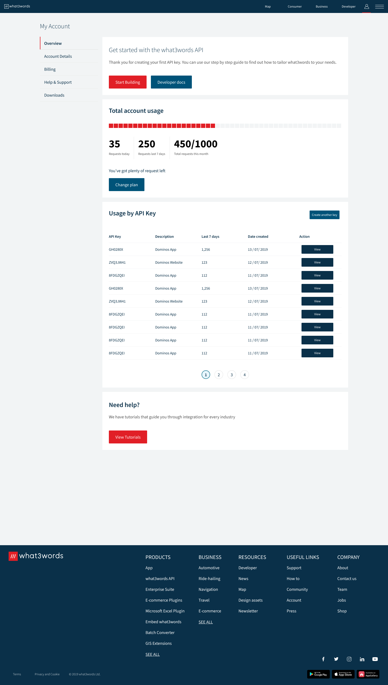

Duration
Two hours
Background
What3words is a proprietory geocode system from London, UK. They have developed a product that allows for precise geolocation encoded into three words, rather than traditional strings or numbers/letters.
The challenge
The current accounts section of What3Words only provides exact numbers of API usage to users but does not provide information on how many requests have been made relative to their plan, nor how many they have left in their plan before their need to upgrade.
The challenge was to provide an update design to the 'Total account usage' block on the accounts page that helps the user view their usage for the current month, and better understand how many API requests they have left in their plan until they run out.
This should be based on the starter plan of 1,000 requests per month and should have three tiers:
Discovery
As this challenge was set at two hours, I didn't have time to perform any comprehensive research other than that into the company itself.
Define
I started drafting some preliminary sketches of how I envisioned the UI to look.
Initially, the instinct was to show API usage via a traditional progress bar, but after taking a look at the branding of What3Words, I decided to use their little red square, ordinarily an indicator of current location, as a part of the UI.
Each square would represent a certain amount of API requests.
This visual depiction of usage would make it clear roughly how many requests they have used.
Adding text such as 'You're running out' reenforces and supports this infographic.
For users who want specifics, the data regarding daily, weekly requests remain the same, however there needed to be a new column with the amount of requests this month.

Design
I generated a design based on my sketches and was almost satisfied, yet something was missing.
I realised that there needed to be what I like to call a 'What next?' element. When the user runs out of API requests for that month and wants to upgrade, what do they do next?
The current method is to locate an upgrade button in the Account Details page (located in the left menu). However, this would not be clear for users, for example they may click billing instead.
I added an upgrade plan button that would activate when users began to reach their API limit.
After adding the upgrade button, I made a few tweaks to the hierachy to align with the current design system and page layout.
I brought the button to the left and aligned the colour and copy to the button found in the Account Details page.
Changing this meant I also needed to make the button a constant fixture which made more sense from a development side as well as allowing users to change at any time they want.
Bringing it over to the left also meant I needed to adjust the hierarchy a little to make it flow better.
Final design

Results
As this was a design challenge the results were based on feedback from the client.
Note: I was successful in receiving a job offer from this challenge but was unable to accept due to relocation.
A few months later they followed up with me asking if my living situation had changed but alas, I had settled in my new country.
Key takeaways
This was a quick project that illustrates a holistic approach to design.
In order to design an API that had some personality, I used the company's most recognisable UI element and transformed it into a new type of information.
Taking things a step further, I kept in mind the company's economic needs to convert customers to more lucrative plans.
Coded by myself with care and frustration.
© Sean Winchester 2022